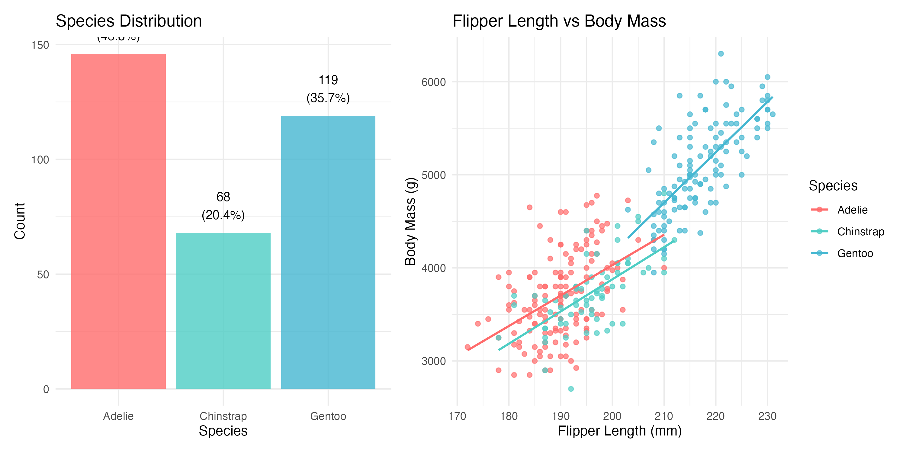
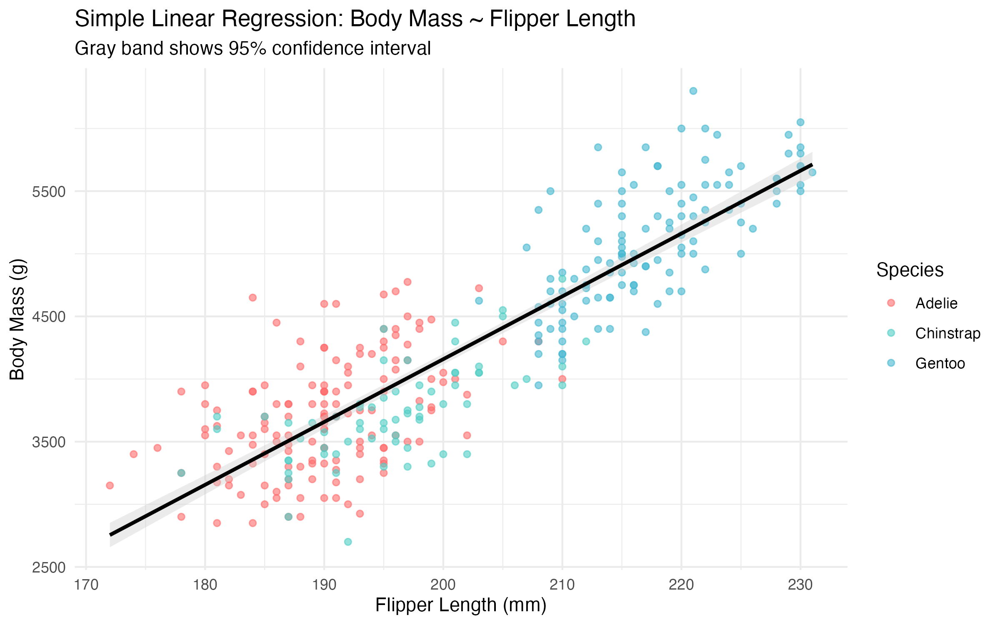
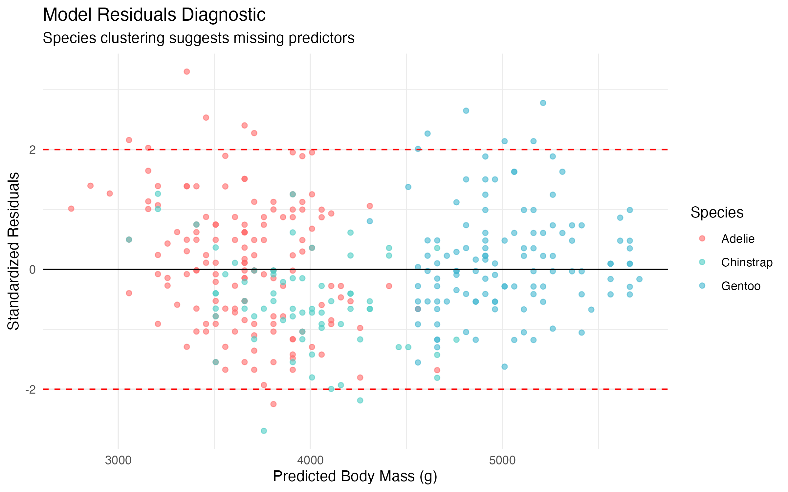

.jpg){kind=link}
# Install required packages if not already installed
install.packages(c("palmerpenguins", "tidyverse", "broom", "corrplot",
"GGally", "patchwork", "knitr"))Palmer Penguins Data Analysis Series (Part 1): Exploratory Data Analysis and Simple Regression
Getting acquainted with our Antarctic friends and their morphometric relationships
R Programming
Data Science
Statistical Computing
Exploratory Data Analysis
Palmer Penguins
Part 1 of a comprehensive 5-part series exploring Palmer penguin morphometrics through exploratory data analysis and simple regression modeling

Photo: African penguins at Boulders Beach, South Africa. Licensed under CC BY 2.0 via Wikimedia Commons
Note🐧 Palmer Penguins Data Analysis Series
This is Part 1 of a 5-part series exploring penguin morphometrics:
- Part 1: EDA and Simple Regression (This post)
- Part 2: Multiple Regression and Species Effects
- Part 3: Advanced Models and Cross-Validation
- Part 4: Model Diagnostics and Interpretation
- Part 5: Random Forest vs Linear Models
1 Introduction
Welcome to our comprehensive exploration of the Palmer penguins dataset! In this 5-part series, we’ll journey through the complete data science workflow, from initial data exploration to advanced modeling techniques. The Palmer penguins dataset has become a beloved alternative to the iris dataset, providing real-world biological data that’s both engaging and educationally valuable.
Collected by Dr. Kristen Gorman at Palmer Station Antarctica, this dataset contains morphometric measurements for three penguin species: Adelie (Pygoscelis adeliae), Chinstrap (Pygoscelis antarcticus), and Gentoo (Pygoscelis papua). Understanding these relationships is crucial for Antarctic ecology research, as body mass serves as a key indicator of penguin health and reproductive success.
In this first part, we’ll focus on:
- Getting familiar with the Palmer penguins dataset
- Conducting thorough exploratory data analysis
- Understanding the relationships between morphometric variables
- Building our first simple regression model
- Establishing the foundation for more complex analyses in subsequent parts
By the end of this post, you’ll have a solid understanding of the data structure and the strongest individual predictors of penguin body mass.
2 Prerequisites and Setup
Before we begin our Antarctic adventure, let’s ensure we have the right tools:
Required Packages:
Load Libraries:
library(palmerpenguins)
library(tidyverse)
library(broom)
library(corrplot)
library(GGally)
library(patchwork)
library(knitr)
# Set theme for consistent plotting
theme_set(theme_minimal(base_size = 12))
# Set penguin-friendly colors
penguin_colors <- c("Adelie" = "#FF6B6B", "Chinstrap" = "#4ECDC4", "Gentoo" = "#45B7D1")3 Meet the Penguins: Dataset Overview
Let’s start by getting acquainted with our Antarctic research subjects:
# Load the Palmer penguins data
data(penguins)
# Basic dataset information and data quality check
cat("🐧 Palmer Penguins Dataset Overview 🐧\n")🐧 Palmer Penguins Dataset Overview 🐧cat("=====================================\n")=====================================cat("Dimensions:", nrow(penguins), "observations ×", ncol(penguins), "variables\n")Dimensions: 344 observations × 8 variables# Check for missing values efficiently
missing_counts <- sapply(penguins, function(x) sum(is.na(x)))
cat("Missing values:", sum(missing_counts), "total\n\n")Missing values: 19 total# Create clean dataset for analysis
penguins_clean <- penguins %>% drop_na()
cat("Clean dataset:", nrow(penguins_clean), "observations (removed",
nrow(penguins) - nrow(penguins_clean), "incomplete cases)\n\n")Clean dataset: 333 observations (removed 11 incomplete cases)# Display key variable information
glimpse(penguins_clean)Rows: 333
Columns: 8
$ species <fct> Adelie, Adelie, Adelie, Adelie, Adelie, Adelie, Adel…
$ island <fct> Torgersen, Torgersen, Torgersen, Torgersen, Torgerse…
$ bill_length_mm <dbl> 39.1, 39.5, 40.3, 36.7, 39.3, 38.9, 39.2, 41.1, 38.6…
$ bill_depth_mm <dbl> 18.7, 17.4, 18.0, 19.3, 20.6, 17.8, 19.6, 17.6, 21.2…
$ flipper_length_mm <int> 181, 186, 195, 193, 190, 181, 195, 182, 191, 198, 18…
$ body_mass_g <int> 3750, 3800, 3250, 3450, 3650, 3625, 4675, 3200, 3800…
$ sex <fct> male, female, female, female, male, female, male, fe…
$ year <int> 2007, 2007, 2007, 2007, 2007, 2007, 2007, 2007, 2007…4 Exploratory Data Analysis
4.1 Species and Morphometric Overview
Let’s understand our penguin community composition and key measurements:
# Species summary with key statistics
species_summary <- penguins_clean %>%
group_by(species) %>%
summarise(
n = n(),
body_mass_mean = round(mean(body_mass_g), 0),
flipper_length_mean = round(mean(flipper_length_mm), 1),
.groups = "drop"
) %>%
mutate(percentage = round(n / sum(n) * 100, 1))
kable(species_summary,
caption = "Species Distribution and Key Morphometrics",
col.names = c("Species", "N", "Body Mass (g)", "Flipper Length (mm)", "% of Dataset"))| Species | N | Body Mass (g) | Flipper Length (mm) | % of Dataset |
|---|---|---|---|---|
| Adelie | 146 | 3706 | 190.1 | 43.8 |
| Chinstrap | 68 | 3733 | 195.8 | 20.4 |
| Gentoo | 119 | 5092 | 217.2 | 35.7 |
# Combined visualization: species distribution and key relationships
p_species <- ggplot(species_summary, aes(x = species, y = n, fill = species)) +
geom_col(alpha = 0.8) +
geom_text(aes(label = paste0(n, "\n(", percentage, "%)")),
vjust = -0.5, size = 3.5) +
scale_fill_manual(values = penguin_colors) +
labs(title = "Species Distribution", x = "Species", y = "Count") +
theme_minimal() + theme(legend.position = "none")
# Flipper length vs body mass by species
p_relationship <- ggplot(penguins_clean, aes(x = flipper_length_mm, y = body_mass_g, color = species)) +
geom_point(alpha = 0.7, size = 1.5) +
geom_smooth(method = "lm", se = FALSE, size = 0.8) +
scale_color_manual(values = penguin_colors) +
labs(title = "Flipper Length vs Body Mass",
x = "Flipper Length (mm)", y = "Body Mass (g)", color = "Species") +
theme_minimal()
# Combine plots
eda_overview <- p_species + p_relationship
print(eda_overview)
# Save the plot
ggsave("eda-overview.png", plot = eda_overview, width = 10, height = 5, dpi = 300)
5 Species-Specific Patterns
 “Each species has its own personality… and body mass distribution!”
“Each species has its own personality… and body mass distribution!”
# Comprehensive morphometric summary by species with confidence intervals
morphometric_summary <- penguins_clean %>%
group_by(species) %>%
summarise(
n = n(),
body_mass_mean = round(mean(body_mass_g), 0),
body_mass_ci = round(1.96 * sd(body_mass_g) / sqrt(n()), 1),
flipper_length_mean = round(mean(flipper_length_mm), 1),
flipper_length_ci = round(1.96 * sd(flipper_length_mm) / sqrt(n()), 1),
.groups = "drop"
)
kable(morphometric_summary,
caption = "Morphometric Statistics by Species (±95% CI)",
col.names = c("Species", "N", "Body Mass (g)", "±95% CI",
"Flipper Length (mm)", "±95% CI"))| Species | N | Body Mass (g) | ±95% CI | Flipper Length (mm) | ±95% CI |
|---|---|---|---|---|---|
| Adelie | 146 | 3706 | 74.4 | 190.1 | 1.1 |
| Chinstrap | 68 | 3733 | 91.4 | 195.8 | 1.7 |
| Gentoo | 119 | 5092 | 90.1 | 217.2 | 1.2 |
# Key measurements comparison
p_comparison <- ggplot(penguins_clean, aes(x = species, fill = species)) +
geom_boxplot(aes(y = body_mass_g), alpha = 0.7, position = position_dodge(0.8)) +
scale_fill_manual(values = penguin_colors) +
labs(title = "Body Mass Distribution by Species",
subtitle = "Gentoo penguins are notably larger than Adelie and Chinstrap",
x = "Species", y = "Body Mass (g)") +
theme_minimal() + theme(legend.position = "none")
print(p_comparison)
ggsave("species-comparison.png", plot = p_comparison, width = 8, height = 5, dpi = 300)
6 Correlation Analysis
# Calculate correlation matrix and identify strongest predictors
numeric_vars <- penguins_clean %>%
select(bill_length_mm, bill_depth_mm, flipper_length_mm, body_mass_g)
correlation_matrix <- cor(numeric_vars)
# Extract key correlations with body mass
body_mass_cors <- correlation_matrix["body_mass_g", ] %>%
sort(decreasing = TRUE) %>%
round(3)
# Display key correlations
cat("🔍 Correlations with Body Mass (strongest predictors):\n")🔍 Correlations with Body Mass (strongest predictors):cat(sprintf(" Flipper Length: %s (strongest relationship)\n", body_mass_cors["flipper_length_mm"])) Flipper Length: 0.873 (strongest relationship)cat(sprintf(" Bill Length: %s\n", body_mass_cors["bill_length_mm"])) Bill Length: 0.589cat(sprintf(" Bill Depth: %s (negative relationship)\n", body_mass_cors["bill_depth_mm"])) Bill Depth: -0.472 (negative relationship)# Create correlation visualization
png("correlation-matrix.png", width = 6, height = 6, res = 300, units = "in")
corrplot(correlation_matrix, method = "color", type = "upper",
order = "hclust", tl.cex = 1.0, tl.col = "black",
addCoef.col = "black", number.cex = 0.8,
title = "Morphometric Correlations", mar = c(0,0,2,0))
dev.off()quartz_off_screen
2 
7 Simple Linear Regression
 “Time to see if flipper length really predicts our weight!”
“Time to see if flipper length really predicts our weight!”
7.1 Building and Interpreting the Model
# Fit simple linear regression model
simple_model <- lm(body_mass_g ~ flipper_length_mm, data = penguins_clean)
# Extract coefficients with confidence intervals
model_coefficients <- tidy(simple_model, conf.int = TRUE)
model_metrics <- glance(simple_model)
# Display key results
cat("📊 Simple Linear Model Results:\n")📊 Simple Linear Model Results:cat("===============================\n")===============================cat(sprintf("R-squared: %.3f (%.1f%% of variance explained)\n",
model_metrics$r.squared, model_metrics$r.squared * 100))R-squared: 0.762 (76.2% of variance explained)cat(sprintf("RMSE: %.1f grams\n", sigma(simple_model)))RMSE: 393.3 gramscat(sprintf("F-statistic: %.1f (p < 0.001)\n", model_metrics$statistic))F-statistic: 1060.3 (p < 0.001)# Model equation with confidence intervals
intercept <- model_coefficients$estimate[1]
slope <- model_coefficients$estimate[2]
slope_ci_lower <- model_coefficients$conf.low[2]
slope_ci_upper <- model_coefficients$conf.high[2]
cat("\n🧮 Model Equation:\n")
🧮 Model Equation:cat(sprintf("Body Mass = %.1f + %.1f × Flipper Length\n", intercept, slope))Body Mass = -5872.1 + 50.2 × Flipper Lengthcat(sprintf("Slope 95%% CI: [%.1f, %.1f] grams/mm\n", slope_ci_lower, slope_ci_upper))Slope 95% CI: [47.1, 53.2] grams/mm# Generate predictions with confidence intervals
new_data <- tibble(flipper_length_mm = c(180, 200, 220))
predictions <- predict(simple_model, newdata = new_data, interval = "confidence")
cat("\n📝 Example Predictions (95% CI):\n")
📝 Example Predictions (95% CI):for(i in 1:nrow(new_data)) {
cat(sprintf("• %dmm flippers: %.0f g [%.0f, %.0f]\n",
new_data$flipper_length_mm[i],
predictions[i, "fit"],
predictions[i, "lwr"],
predictions[i, "upr"]))
}• 180mm flippers: 3155 g [3079, 3232]
• 200mm flippers: 4159 g [4116, 4201]
• 220mm flippers: 5162 g [5090, 5233]# Visualize model with confidence bands
model_plot <- ggplot(penguins_clean, aes(x = flipper_length_mm, y = body_mass_g)) +
geom_point(aes(color = species), alpha = 0.6) +
geom_smooth(method = "lm", color = "black", fill = "gray80") +
scale_color_manual(values = penguin_colors) +
labs(title = "Simple Linear Regression: Body Mass ~ Flipper Length",
subtitle = "Gray band shows 95% confidence interval",
x = "Flipper Length (mm)", y = "Body Mass (g)", color = "Species") +
theme_minimal()
print(model_plot)
ggsave("simple-regression-model.png", plot = model_plot, width = 8, height = 5, dpi = 300)
8 Model Limitations and Assumptions
 “Wait, we should read the assumptions first!”
“Wait, we should read the assumptions first!”
Before interpreting our results, we must acknowledge important limitations:
8.1 Statistical Limitations
# Model diagnostic checks
penguins_with_predictions <- penguins_clean %>%
mutate(
predicted = predict(simple_model),
residuals = residuals(simple_model),
standardized_residuals = rstandard(simple_model)
)
# Check for outliers and influential points
outliers <- which(abs(penguins_with_predictions$standardized_residuals) > 2.5)
cat("⚠️ Model Assumption Checks:\n")⚠️ Model Assumption Checks:cat(sprintf("• Potential outliers: %d observations (>2.5 SD from mean)\n", length(outliers)))• Potential outliers: 5 observations (>2.5 SD from mean)cat(sprintf("• Residual standard error: %.1f grams\n", sigma(simple_model)))• Residual standard error: 393.3 grams# Residuals diagnostic plot
diagnostic_plot <- ggplot(penguins_with_predictions, aes(x = predicted, y = standardized_residuals)) +
geom_point(aes(color = species), alpha = 0.6) +
geom_hline(yintercept = c(-2, 0, 2), linetype = c("dashed", "solid", "dashed"),
color = c("red", "black", "red")) +
scale_color_manual(values = penguin_colors) +
labs(title = "Model Residuals Diagnostic",
subtitle = "Species clustering suggests missing predictors",
x = "Predicted Body Mass (g)", y = "Standardized Residuals", color = "Species") +
theme_minimal()
print(diagnostic_plot)
ggsave("model-diagnostics.png", plot = diagnostic_plot, width = 8, height = 5, dpi = 300)
8.2 Key Limitations
- Simpson’s Paradox Risk: The model ignores species differences, potentially masking important biological relationships
- Model Assumptions:
- Linear relationship assumption appears reasonable
- Residual clustering by species indicates missing predictors
- Homoscedasticity assumption may be violated across species
- Temporal Generalizability: Data spans 2007-2009; climate change may affect current relationships
- Geographic Scope: Limited to Palmer Station region; may not generalize to other penguin populations
- Measurement Precision: Morphometric measurements have inherent measurement error not captured in model
- Biological Constraints: Model predictions outside observed flipper length range (172-231mm) should be interpreted cautiously
9 Practical Applications and Implications
 “Now let’s use this model to help our penguin community!”
“Now let’s use this model to help our penguin community!”
9.1 Real-World Applications
Our simple regression model has several practical applications in Antarctic research:
# Calculate effect sizes and practical significance
effect_size <- slope / sd(penguins_clean$body_mass_g)
cat("🌍 Practical Applications:\n")🌍 Practical Applications:cat(sprintf("• Field Assessment: Flipper measurements can estimate body condition (effect size: %.2f)\n", effect_size))• Field Assessment: Flipper measurements can estimate body condition (effect size: 0.06)cat(sprintf("• Population Monitoring: Track penguin health trends using flipper-mass relationships\n"))• Population Monitoring: Track penguin health trends using flipper-mass relationshipscat(sprintf("• Climate Research: Changes in morphometric relationships may indicate environmental stress\n"))• Climate Research: Changes in morphometric relationships may indicate environmental stresscat(sprintf("• Conservation Planning: Identify underweight individuals for targeted intervention\n"))• Conservation Planning: Identify underweight individuals for targeted intervention# Practical thresholds based on model
low_threshold <- quantile(penguins_clean$body_mass_g, 0.25)
high_threshold <- quantile(penguins_clean$body_mass_g, 0.75)
cat("\n📊 Clinical Thresholds:\n")
📊 Clinical Thresholds:cat(sprintf("• Low body condition: <%.0f g (based on 25th percentile)\n", low_threshold))• Low body condition: <3550 g (based on 25th percentile)cat(sprintf("• Normal range: %.0f-%.0f g\n", low_threshold, high_threshold))• Normal range: 3550-4775 gcat(sprintf("• High body condition: >%.0f g (based on 75th percentile)\n", high_threshold))• High body condition: >4775 g (based on 75th percentile)10 Key Findings and Next Steps
10.1 What We’ve Learned in Part 1
Strong Predictive Relationship: Flipper length explains 76% of body mass variance (R² = 0.762), providing a reliable field assessment tool
Species-Specific Patterns: Residual clustering by species suggests important biological differences not captured by flipper length alone
Model Performance: RMSE of 393g indicates reasonable prediction accuracy for most applications
Research Implications: Simple morphometric relationships can support field research and conservation efforts
10.2 Looking Ahead to Part 2
Our residual analysis reveals clear opportunities for improvement through:
- Species Integration: Accounting for biological differences between penguin species
- Multiple Predictors: Incorporating bill measurements for enhanced accuracy
- Interaction Effects: Exploring how predictors work together
- Model Validation: Comparing simple vs. complex model performance
Tip🎯 Preview: Dramatic Model Improvement
In Part 2, adding species information will improve our model’s R² from 0.762 to over 0.860 - demonstrating why biological context matters in ecological modeling!
11 Reproducibility Information
R version 4.5.2 (2025-10-31)
Platform: aarch64-apple-darwin20
Running under: macOS Sequoia 15.6.1
Matrix products: default
BLAS: /System/Library/Frameworks/Accelerate.framework/Versions/A/Frameworks/vecLib.framework/Versions/A/libBLAS.dylib
LAPACK: /Library/Frameworks/R.framework/Versions/4.5-arm64/Resources/lib/libRlapack.dylib; LAPACK version 3.12.1
locale:
[1] en_US.UTF-8/en_US.UTF-8/en_US.UTF-8/C/en_US.UTF-8/en_US.UTF-8
time zone: America/Los_Angeles
tzcode source: internal
attached base packages:
[1] stats graphics grDevices utils datasets methods base
other attached packages:
[1] knitr_1.50 patchwork_1.3.2 GGally_2.2.1
[4] corrplot_0.95 broom_1.0.10 lubridate_1.9.4
[7] forcats_1.0.0 stringr_1.6.0 dplyr_1.1.4
[10] purrr_1.2.0 readr_2.1.5 tidyr_1.3.1
[13] tibble_3.3.0 ggplot2_4.0.1 tidyverse_2.0.0
[16] palmerpenguins_0.1.1
loaded via a namespace (and not attached):
[1] generics_0.1.4 lattice_0.22-7 stringi_1.8.7 hms_1.1.3
[5] digest_0.6.39 magrittr_2.0.4 evaluate_1.0.5 grid_4.5.2
[9] timechange_0.3.0 RColorBrewer_1.1-3 fastmap_1.2.0 Matrix_1.7-4
[13] plyr_1.8.9 jsonlite_2.0.0 backports_1.5.0 mgcv_1.9-3
[17] scales_1.4.0 textshaping_1.0.3 cli_3.6.5 rlang_1.1.6
[21] splines_4.5.2 withr_3.0.2 yaml_2.3.11 tools_4.5.2
[25] parallel_4.5.2 tzdb_0.5.0 ggstats_0.9.0 vctrs_0.6.5
[29] R6_2.6.1 lifecycle_1.0.4 htmlwidgets_1.6.4 ragg_1.4.0
[33] pkgconfig_2.0.3 pillar_1.11.1 gtable_0.3.6 glue_1.8.0
[37] Rcpp_1.1.0 systemfonts_1.2.3 xfun_0.54 tidyselect_1.2.1
[41] farver_2.1.2 htmltools_0.5.9 nlme_3.1-168 rmarkdown_2.30
[45] labeling_0.4.3 compiler_4.5.2 S7_0.2.1
Note🐧 Continue Your Journey
Ready for the next part? Check out Part 2: Multiple Regression and Species Effects where we’ll dramatically improve our model by incorporating multiple predictors and species information!
Full Series: 1. Part 1: EDA and Simple Regression (This post) ✅ 2. Part 2: Multiple Regression and Species Effects 3. Part 3: Advanced Models and Cross-Validation 4. Part 4: Model Diagnostics and Interpretation 5. Part 5: Random Forest vs Linear Models
Have questions about this analysis or suggestions for the series? Feel free to reach out on Twitter or LinkedIn. You can also find the complete code for this series on GitHub.
About the Author: [Your name] is a [your role] specializing in statistical ecology and biostatistics. This series demonstrates best practices for exploratory data analysis and regression modeling in biological research.
Reuse
Citation
BibTeX citation:
@online{(ryy)_glenn_thomas2025,
author = {(Ryy) Glenn Thomas, Ronald and Name, Your},
title = {Palmer {Penguins} {Data} {Analysis} {Series} {(Part} 1):
{Exploratory} {Data} {Analysis} and {Simple} {Regression}},
date = {2025-01-01},
url = {https://focusonr.org/posts/configultisnips/pp_index.html},
langid = {en}
}
For attribution, please cite this work as:
(Ryy) Glenn Thomas, Ronald, and Your Name. 2025. “Palmer Penguins
Data Analysis Series (Part 1): Exploratory Data Analysis and Simple
Regression.” January 1, 2025. https://focusonr.org/posts/configultisnips/pp_index.html.